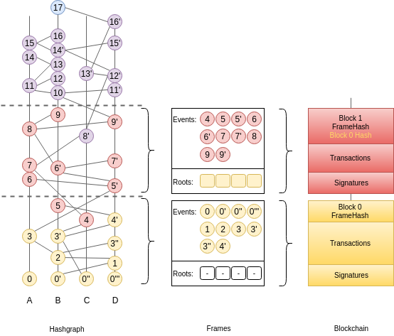
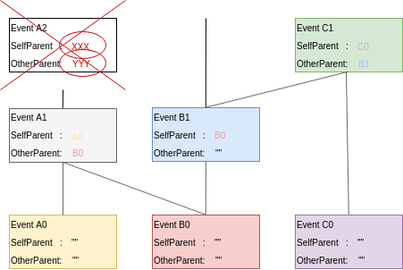

FastSync¶
FastSync is an element of the Lachesis protocol which enables nodes to catch up with other nodes without downloading and processing the entire history of gossip (Poset + Blockchain). It is important in the context of mobile ad hoc networks where users dynamically create or join groups, and where limited computing resources call for periodic pruning of the underlying data store. The solution relies on linking snapshots of the application state to independent and self-contained sections of the Poset, called Frames. A node that fell back too far may fast-forward straight to the latest snapshot, initialize a new Poset from the corresponding Frame, and get up to speed with the other nodes without downloading and processing all the transactions it missed. Of course, the protocol maintains the BFT properties of the base algorithm by packaging relevant data in signed blocks; here again we see the benefits of using a blockchain mapping on top of Poset. Although implementing the Snapshot/Restore functionality puts extra strain on the application developer, it remains entirely optional; FastSync can be activated or deactivated via configuration.
Overview¶
The Lachesis node is implemented as a state machine where the possible states are: Babbling, CatchingUp, and Shutdown. A node is normally in the Babbling state where it performs the regular Poset gossip routines, but a sync_limit response from a peer will trigger the node to enter the CatchingUp state, where it will attempt to fast-forward to a recent snapshot. A sync_limit response indicates that the number of Events that the node needs to download exceeds the sync_limit configuration value.
In the CatchingUp state, a node repeatedly chooses another node at random (although the above diagram uses the same peer that returned the sync_limit response) and attempts to fast-forward to their last consensus snapshot, until the operation succeeds. Hence, FastSync introduces a new type of command in the communication protocol: FastForward.
Upon receiving a FastForwardRequest, a node must respond with the last consensus snapshot, as well as the corresponding Poset section (the Frame) and Block. With this information, and having verified the Block signatures against the other items as well as the known validator set, the requesting node attempts to reset its Poset from the Frame, and restore the application from the snapshot. The difficulty resides in defining what is meant by last consensus snapshot, and how to package enough information in the Frames as to form a base for a new/pruned Poset.
Frames¶
Frames are self-contained sections of the Poset. They are composed of Roots and regular Poset Events, where Roots are the base on top of which Events can be inserted. Basically, Frames form a valid foundation for a new Poset, such that gossip-about-gossip routines are not discontinued, while earlier records of the gossip history are ignored.
type Frame struct {
Round int //RoundReceived
Roots []Root //[participant ID] => Root
Events []Event //Events with RoundReceived = Round
}
A Frame corresponds to a Poset consensus round. Indeed, the consensus algorithm commits Events in batches, which we map onto Frames, and finally onto a Blockchain. This is an evolution of the previously defined blockchain mapping. Block headers now contain a Frame hash. As we will see later, this is useful for security. The Events in a Frame are the Events of the corresponding batch, in consensus order.
Roots¶
Frames also contain Roots. To get an understanding for why this is necessary, we must consider the initial state of a Poset, i.e., the base on top of which the first Events are inserted.
The Poset is an interlinked chain of Events, where each Event contains two references to anterior Events (SelfParent and OtherParent). Upon inserting an Event in the Poset, we check that its references point to existing Events (Events that are already in the Poset) and that at least the SelfParent reference is not empty. This is partially illustrated in the following picture where Event A2 cannot be inserted because its references are unknown.
So what about the first Event? Until now, we simply implemented a special case, whereby the first Event for any participant, could be inserted without checking its references. In fact the above picture shows that Events A0, B0, and C0, have empty references, and yet they are part of the Poset. This special case is fine as long as we do not expect to initialize Posets from a ‘non-zero’ state.
We introduced the concept of Roots to remove the special case and handle more general situations. They make it possible to initialize a Poset from a section of an existing Poset, and discard everything below it.
A Root is a data structure containing condensed information about the dominators of the first Events to be added to the Poset. Each participant has a Root, containing a SelfParent - the direct dominator of the first Event for the corresponding participant - and Others - a map of Event hashes to the corresponding Other-Parents. These parents are instances of the RootEvent object, which is a minimal version of the Poset Event. RootEvents contain information about the Index, Round, and LamportTimestamp of the corresponding Events. The Root itself contains a NextRound field, which helps in calculating the Round of its direct dominated.
type Root struct {
NextRound int
SelfParent RootEvent
Others map[string]RootEvent
}
type RootEvent struct {
Hash string
CreatorID int
Index int
LamportTimestamp int
Round int
}
Algorithm Updates¶
The new rule for inserting an Event in the Poset prescribes that an Event should only be inserted if its parents belong to the Poset or are referenced in one of the Roots. The algorithms for computing an Event’s Round and LamportTimestamp have also changed slightly.
There are six different scenarios to consider when computing an Event’s Round; each corresponding to a different relationship between the Event and its creator’s Root.
Scenario |
Description |
Round |
LamportTimestamp |
|---|---|---|---|
A |
The Event is a Root itself |
Root.SelfParent.Round |
Root.SelfParent.LamportTimestamp |
B |
The Event is directly attached to the Root, and its OtherParent is empty |
Root.NextRound |
Root.SelfParent.LamportTimestamp + 1 |
C |
The Event is directly attached to the Root, and its OtherParent is referenced in Root.Others |
Root.NextRound |
Max(Root.SelfParent.LamportTimestamp, Root.Others[AAA].LamportTimestamp) +1 |
D |
The Event is not directly attached to the Root, but its OtherParent is referenced in Root.Others |
Max(Event.SelfParent.Round, Root.Others[AAA].Round) + RoundInc() |
Max(Event.SelfParent.LamportTimestamp, Root.Others[AAA].LamportTimestamp) +1 |
E |
The Event is directly attached to the Root, and its OtherParent is a normal Event |
Max(Root.SelfParent.Round, Event.OtherParent.Round) + RoundInc() |
Max(Root.SelfParent.LamportTimestamp, Event.OtherParent.LamportTimestamp) +1 |
F |
Both parents are regular Events (or OtherParent is empty) |
Max(Event.SelfParent.Round, Event.OtherParent.Round) + RoundInc() |
Max(Event.SelfParent.LamportTimestamp, Event.OtherParent.LamportTimestamp) +1 |
Here RoundInc() is the function that computes whether and Event’s Round should be incremented over its ParentRound. It checks if the Event can StronglySee a super-majority of clothos from ParentRound, as described in the original whitepaper.
Note that there is still a possibility for an Event’s OtherParent to refer to an Event “below” the Frame. This is possible due to the asynchronous nature of the gossip routines, but is an unlikely scenario. The Frame design tries to find a compromise between the size and the amount of useful information they contain. Frames could be made to include more information so as to avoid this type of problem with greater probability, but such and approach could eventually undermine the usefulness of Frames as light-weight data points. As we shall see later, a potential solution to such and edge-case would be to adopt a “let it crash” philosophy and rely on an other level to handle the burden.
FastForward¶
Frames may be used to initialize or reset a Poset to a clean state, with indexes, rounds, blocks, etc., corresponding to a capture of a live run, such that further Events may be inserted and processed independently of past Events. Poset Frames are loosely analogous to IFrames in video encoding, which enable fast-forwarding to any point in the video.
To avoid being tricked into fast-forwarding to an invalid state, the protocol ties Frames to the corresponding Blockchain by including Frame hashes in affiliated Block headers. A FastForwardResponse includes a Block and a Frame, such that, upon receiving these objects, the requester may check the Frame hash against the Block header, and count the Block signatures against the known set of validators, before resetting the Poset from the Frame.
Note the importance for the requester to be aware of the validator set of the Poset it wishes to sync with; it is fundamental when it comes to verifying a Block. With a dynamic validator set, however, an additional mechanism will be necessary to securely track changes to the validator set.
Snapshot/Restore¶
It is one thing to catch-up with the Poset and Blockchain, but nodes also need to catch-up with the application state. we extended the Proxy interface with methods to retrieve and restore snapshots.
type AppProxy interface {
SubmitCh() chan []byte
CommitBlock(block poset.Block) ([]byte, error)
GetSnapshot(blockIndex int) ([]byte, error)
Restore(snapshot []byte) error
}
Since snapshots are raw byte arrays, it is up to the application layer to define what the snapshots represent, how they are encoded, and how they may be used to restore the application to a particular state. The GetSnapshot method takes a blockIndex parameter, which implies that the application should keep track of snapshots for every committed block. As the protocol evolves, we will likely link this to a FrameRate parameter to reduce the overhead on the application caused by the need to take all these snapshots.
So together with a Frame and the corresponding Block, a FastForward request comes with a snapshot of the application for the node to restore the application to the corresponding state. If the snapshot was incorrect, the node will immediately diverge from the main chain because it will obtain different state hashes upon committing new blocks.
Improvements and Further Work¶
The protocol is not entirely watertight yet; there are edge cases that could quickly lead to forks and diverging nodes.
1) Although it is unlikely, Events above the Frame that reference parents from “below” the Frame. These Events will fail to be inserted into the Poset, and the node would stop making progress.
2) The snapshot is not directly linked to the Blockchain, only indirectly through resulting StateHashes.
Both these issues could be addressed with a general retry mechanism, whereby the FastForward method is made atomic by working on a temporary copy of the Poset. If an error or a fork are detected, try to FastSync again from another Frame. This requires further work and design on fork detection and self-healing protocols.